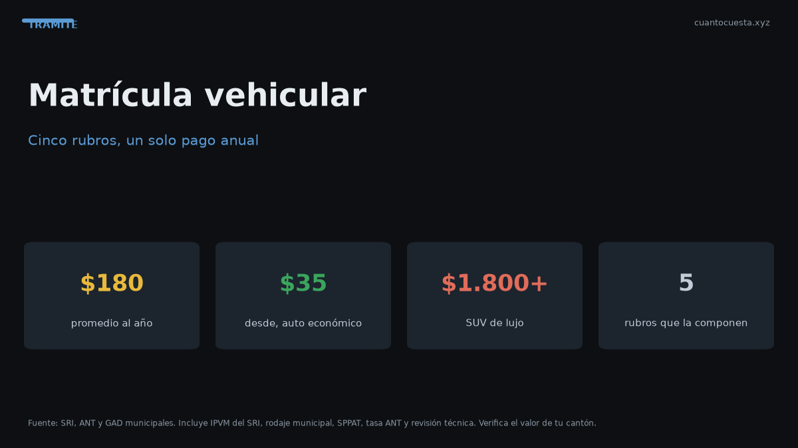

Matrícula vehicular en Ecuador 2026: cuánto cuesta y cómo pagarla
La matrícula vehicular en Ecuador cuesta en promedio $180 al año y reúne 5 rubros. Desglose por rubro, cómo consultar el avalúo por placa y multas por atraso.

Matricular un auto liviano en Ecuador cuesta en promedio $180 al año, pero el rango real va desde unos $35 para un vehículo económico hasta más de $1.800 para una SUV de lujo. La cifra depende de un solo número: el avalúo registrado en el SRI.
La matrícula no es un impuesto único. Son cinco rubros que se pagan juntos en una sola transacción, en ventanilla o en línea. Si entiendes de dónde sale cada uno, puedes estimar tu pago antes de que llegue.
Los 5 rubros que se pagan juntos
| Rubro | Quién lo cobra | Cómo se calcula |
|---|---|---|
| Impuesto a la Propiedad de Vehículos Motorizados (IPVM) | SRI | Progresivo, del 0,5% al 6% del avalúo |
| Impuesto al rodaje | GAD municipal | Tarifa fija por tramo de avalúo (COOTAD Art. 539) |
| Tasa SPPAT | ANT | $26,74 para auto liviano representativo |
| Tasa ANT de matriculación y servicios | ANT | Tarifa del servicio de matriculación |
| Revisión Técnica Vehicular | ANT / operadora | $35 livianos, $50 pesados, $27 taxis |
El IPVM es el rubro más pesado y el único realmente progresivo: un vehículo de avalúo bajo paga 0,5% y uno de avalúo muy alto paga hasta 6%. Por eso la diferencia entre matricular un auto económico y una SUV de lujo se multiplica por 50.
La tasa SPPAT no es un monto único: va de $21,11 a $31,67 según el cilindraje, para vehículos de 0 a 9 años. El valor de arriba ($26,74) corresponde a un auto liviano representativo.
Cuánto pesa el impuesto al rodaje según la ciudad
El impuesto al rodaje es municipal y cada GAD fija su propia tarifa por tramo de avalúo. Valores referenciales:
| Ciudad | Rodaje referencial |
|---|---|
| Quito | ~$40 |
| Guayaquil | ~$30 |
| Cuenca | ~$25 |
El impuesto al rodaje no lo fija la ANT ni el SRI: lo fija tu municipio. Dos vehículos idénticos en ciudades distintas pueden pagar matrículas distintas solo por este rubro.
El avalúo manda: cómo consultarlo por placa
El dato que define tu matrícula es el avalúo registrado en el SRI, no lo que pagaste por el vehículo ni su precio de mercado hoy. Ese avalúo se deprecia un 20% anual, con un piso del 10% del PVP original: por más años que pasen, nunca baja de ese piso.
Para consultarlo:
- Entra al portal del SRI con tu usuario o el de tu representado.
- Ubica la consulta de vehículos y avalúo por placa.
- Ingresa el número de placa y confirma los datos del vehículo.
- Anota el avalúo: sobre ese número se calculan IPVM, rodaje y las tasas.
También puedes revisar el calendario y el estado de tus obligaciones vehiculares en los canales de la ANT y de tu municipio. Si compraste el auto usado por menos que el avalúo, la matrícula no baja: se sigue calculando sobre el avalúo del SRI.
El calendario: cuándo te toca matricular
La matrícula se paga una vez al año, en el mes que corresponde al último dígito de tu placa. Ese mes no es aleatorio: está publicado y es obligatorio respetarlo.
Pagar dentro del mes asignado evita multas. Si matriculas fuera de ese mes, se genera una sanción adicional. Verifica tu mes en el calendario oficial de matriculación antes de hacer fila.
Multas y recargos por pagar tarde
Aquí las reglas son concretas:
- No presentarse a la revisión o no aprobarla genera multa.
- Matricular fuera del mes asignado genera multa.
- En la Revisión Técnica, el primer rechequeo es gratuito dentro del plazo.
- La tercera revisión cuesta la mitad de la tarifa.
- La cuarta revisión cuesta tarifa completa.
- El adhesivo de la revisión cuesta $8 adicionales a la tarifa.
Regla práctica: si tu revisión no pasa, vuelve dentro del plazo. El primer rechequeo no cuesta nada; a partir del tercero empiezas a pagar de nuevo.
Matrícula vs. otros trámites: no los confundas
La matrícula anual no es lo mismo que otros trámites que se pagan aparte:
| Trámite | Costo referencial |
|---|---|
| Certificado Único Vehicular (CUV) | $7,50 |
| Especie de matrícula | $25,00 |
| Placas nuevas o duplicado | $23,00 (motos $13,00) |
| Transferencia de dominio (servicio) | $10,00 |
| Cambio de características | $10,50 |
La nueva especie de matrícula ($25) solo se paga cuando cambia el propietario o se emite un documento nuevo; no todos los años.
Preguntas frecuentes
¿Cuánto cuesta la matrícula al año? En promedio unos $180. El rango va de ~$35 a más de $1.800 según el avalúo.
¿Por qué mi matrícula no coincide con la de mi vecino, con el mismo auto? Porque el IPVM es progresivo y el rodaje depende del municipio: dos vehículos iguales en Quito y Guayaquil pagan rodajes distintos.
¿Puedo pagar menos si declaré un precio bajo al comprar? No. La matrícula se calcula sobre el avalúo del SRI, no sobre el precio que pagaste.
¿Qué pasa si no matriculo en mi mes? Se genera multa.
¿La revisión técnica está incluida? Forma parte del paquete de la matrícula; el adhesivo se paga aparte ($8).
Resumen práctico
- La matrícula promedio es de ~$180 al año; el rango va de ~$35 a más de $1.800.
- Se compone de cinco rubros: IPVM (SRI), rodaje (municipio), SPPAT, tasa ANT y revisión técnica.
- El IPVM va del 0,5% al 6% del avalúo; el rodaje es fijo por tramo y cambia por ciudad.
- El avalúo del SRI —no el precio de compra— define todo. Se deprecia 20% anual, con piso del 10% del PVP.
- Paga dentro de tu mes para evitar multas y recuerda que el primer rechequeo de la revisión es gratis.
Los valores son referenciales para 2026 y varían según ciudad, cilindraje y avalúo. Confirma el monto exacto en el SRI, la ANT y tu GAD antes de pagar.
Sigue leyendo
Calendario de matriculación en Ecuador: qué mes te toca según tu placa
La matrícula se paga según el último dígito de tu placa. Revisa qué mes te corresponde, la mult
Cambio de características del vehículo en Ecuador: color, motor y carrocería
Cambiar el color, el motor o la carrocería de tu auto exige declararlo en la ANT: cuándo es obl
Certificado Único Vehicular (CUV) en Ecuador: qué es y cómo obtenerlo
El Certificado Único Vehicular (CUV) cuesta $7,50 en Ecuador. Qué información contiene, cuándo
Cómo hacer el traspaso de dominio de un vehículo en Ecuador (paso a paso)
Traspaso de dominio en Ecuador paso a paso: los 4 pasos ante notaría y ANT, el impuesto del 1%
Duplicado de matrícula y placas en Ecuador: qué hacer si las pierdes
Perdiste o te robaron las placas: pasos, denuncia, requisitos, costos ($23 placas, $25 especie,
Cómo usamos estos datos
Las cifras de esta guía provienen de fuentes públicas oficiales y tarifarios de concesionarios publicados. Los valores son referenciales: tasas municipales, promociones y precios de repuestos varían. Verifica siempre en la entidad o concesionario antes de decidir.